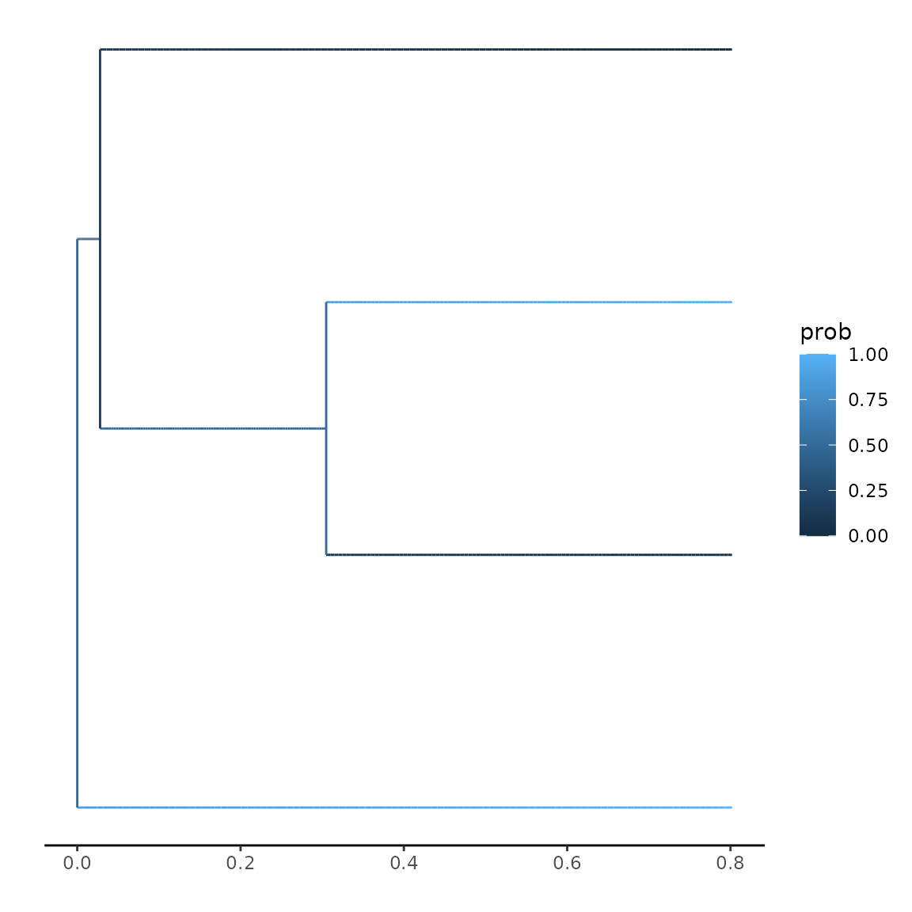
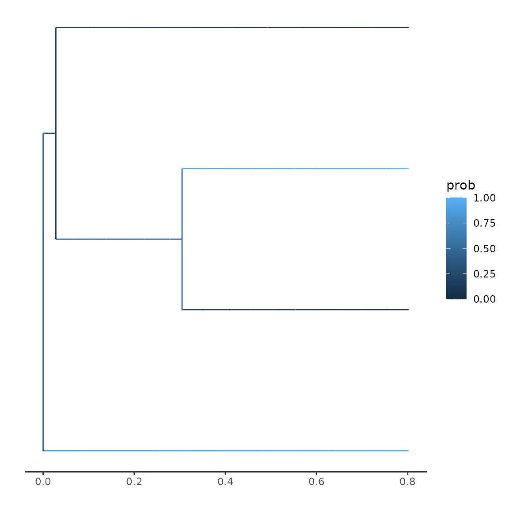

Plotting probabilities
Thijs Janzen
2023-01-20
Source:vignettes/plotting_states.Rmd
plotting_states.RmdPlotting ancestral states
Here, I want to give you a short (and minimal) demonstration of how to plot your ancestral states alongside your tree. Let us assume we have a simple tree, with almost trivial traits:
set.seed(5)
focal_tree <- ape::rphylo(n = 4, birth = 1, death = 0)
traits <- c(0, 1, 1, 0)
plot(focal_tree)
A typical likelihood calculation would look like (assuming 2 observed and 2 hidden traits):
params <- secsse::id_paramPos(c(0, 1), 2)
params[[1]][] <- c(0.2, 0.2, 0.1, 0.1)
params[[2]][] <- 0.0
params[[3]][, ] <- 0.1
diag(params[[3]]) <- NA
ll <- secsse::secsse_loglik(parameter = params,
phy = focal_tree,
traits = traits,
num_concealed_states = 2,
see_ancestral_states = TRUE,
sampling_fraction = c(1, 1))
ll## $ancestral_states
## [,1] [,2] [,3] [,4]
## 7 0.4243298 0.4297629 0.07433059 0.07157672
## 6 0.1027372 0.6574616 0.03145469 0.20834647
## 5 0.3253326 0.3253326 0.17466736 0.17466736
##
## $LL
## [1] -8.605749
##
## $states
## [,1] [,2] [,3] [,4] [,5] [,6] [,7] [,8]
## [1,] 0 0 0 0 1.0000000 0.0000000 1.00000000 0.00000000
## [2,] 0 0 0 0 0.0000000 1.0000000 0.00000000 1.00000000
## [3,] 0 0 0 0 0.0000000 1.0000000 0.00000000 1.00000000
## [4,] 0 0 0 0 1.0000000 0.0000000 1.00000000 0.00000000
## [5,] 0 0 0 0 0.4243298 0.4297629 0.07433059 0.07157672
## [6,] 0 0 0 0 0.1027372 0.6574616 0.03145469 0.20834647
## [7,] 0 0 0 0 0.3253326 0.3253326 0.17466736 0.17466736If we want to visualize the change in trait probabilities across the tree, we can use the function ‘plot_state_exact’. To use this function, we need to provide a helper function that can translate the posterior probabilities into a single probability of interest. For instance, for 2 observed and 2 hidden traits, we observe the following states reconstructed along the nodes:
ll$states## [,1] [,2] [,3] [,4] [,5] [,6] [,7] [,8]
## [1,] 0 0 0 0 1.0000000 0.0000000 1.00000000 0.00000000
## [2,] 0 0 0 0 0.0000000 1.0000000 0.00000000 1.00000000
## [3,] 0 0 0 0 0.0000000 1.0000000 0.00000000 1.00000000
## [4,] 0 0 0 0 1.0000000 0.0000000 1.00000000 0.00000000
## [5,] 0 0 0 0 0.4243298 0.4297629 0.07433059 0.07157672
## [6,] 0 0 0 0 0.1027372 0.6574616 0.03145469 0.20834647
## [7,] 0 0 0 0 0.3253326 0.3253326 0.17466736 0.17466736Here, the first four rows indicate the tip states, whilst the later three rows indicate the states at the internal nodes (with the last row indicating the root, in this case). The columns indicate the four extinction and four speciation rates, following the order in params[[1]] and params[[2]]. Thus, we have for both, rates 0A, 1A, 0B and 1B. If we are interested in the posterior probability of trait 0, we have to provide a helper function that sums the probabilities of 0A and 0B, e.g.:
helper_function <- function(x) {
return(sum(x[c(5, 7)]) / sum(x)) # normalized by total sum, just in case.
}We can now use this to plot this probability across the tree. There are two options for plotting: using the evaluations along the branches as used by the integration method, or evaluating the branch values at a specific number of intervals. Using the explicit evaluations is more precies, but might be memory heavy. Usually, using 10-100 evaluations per branch provides a very accurate approximation:
secsse::plot_state_exact(parameters = params,
focal_tree = focal_tree,
traits = traits,
num_concealed_states = 2,
sampling_fraction = c(1, 1),
prob_func = helper_function)## Warning: Removed 6 rows containing missing values (`geom_segment()`).
secsse::plot_state_exact(parameters = params,
focal_tree = focal_tree,
traits = traits,
num_concealed_states = 2,
sampling_fraction = c(1, 1),
steps = 10,
prob_func = helper_function)## Warning: Removed 6 rows containing missing values (`geom_segment()`).
secsse::plot_state_exact(parameters = params,
focal_tree = focal_tree,
traits = traits,
num_concealed_states = 2,
sampling_fraction = c(1, 1),
steps = 100,
prob_func = helper_function)## Warning: Removed 6 rows containing missing values (`geom_segment()`).
Using CLA secsse
For CLA secsse, a similar function is available, which works in the same way. Borrowing from the example for cla_secsse_loglik, we first prepare our parameters:
set.seed(13)
phylotree <- ape::rcoal(12, tip.label = 1:12)
traits <- sample(c(0, 1, 2),
ape::Ntip(phylotree), replace = TRUE)
num_concealed_states <- 3
sampling_fraction <- c(1, 1, 1)
phy <- phylotree
# the idparlist for a ETD model (dual state inheritance model of evolution)
# would be set like this:
idparlist <- secsse::cla_id_paramPos(traits, num_concealed_states)
lambd_and_modeSpe <- idparlist$lambdas
lambd_and_modeSpe[1, ] <- c(1, 1, 1, 2, 2, 2, 3, 3, 3)
idparlist[[1]] <- lambd_and_modeSpe
idparlist[[2]][] <- 0
masterBlock <- matrix(4, ncol = 3, nrow = 3, byrow = TRUE)
diag(masterBlock) <- NA
idparlist[[3]] <- q_doubletrans(traits, masterBlock, diff.conceal = FALSE)
# Now, internally, clasecsse sorts the lambda matrices, so they look like
# a list with 9 matrices, corresponding to the 9 states
# (0A,1A,2A,0B, etc)
parameter <- idparlist
lambda_and_modeSpe <- parameter$lambdas
lambda_and_modeSpe[1, ] <- c(0.2, 0.2, 0.2, 0.4, 0.4, 0.4, 0.01, 0.01, 0.01)
parameter[[1]] <- prepare_full_lambdas(traits, num_concealed_states,
lambda_and_modeSpe)
parameter[[2]] <- rep(0, 9)
masterBlock <- matrix(0.07, ncol = 3, nrow = 3, byrow = TRUE)
diag(masterBlock) <- NA
parameter[[3]] <- q_doubletrans(traits, masterBlock, diff.conceal = FALSE)Here, we have 9 different states (3 observed states, and 3 hidden states), ordered regularly, e.g.: 0A, 1A, 2A, 0B, 1B, 2B, 0C, 1C, 2C. To observe the change in state 0, we formulate a helper function, noticing that the first 9 states are the extinction rates:
helper_function <- function(x) {
return(sum(x[c(10, 13, 16)]) / sum(x)) # normalized by total sum, just in case
}And then we use these for plotting:
secsse::plot_state_exact_cla(parameters = parameter,
focal_tree = phy,
traits = traits,
num_concealed_states = 3,
sampling_fraction = sampling_fraction,
cond = "maddison_cond",
root_state_weight = "maddison_weights",
is_complete_tree = FALSE,
prob_func = helper_function,
steps = 10)## Warning: Removed 22 rows containing missing values (`geom_segment()`).